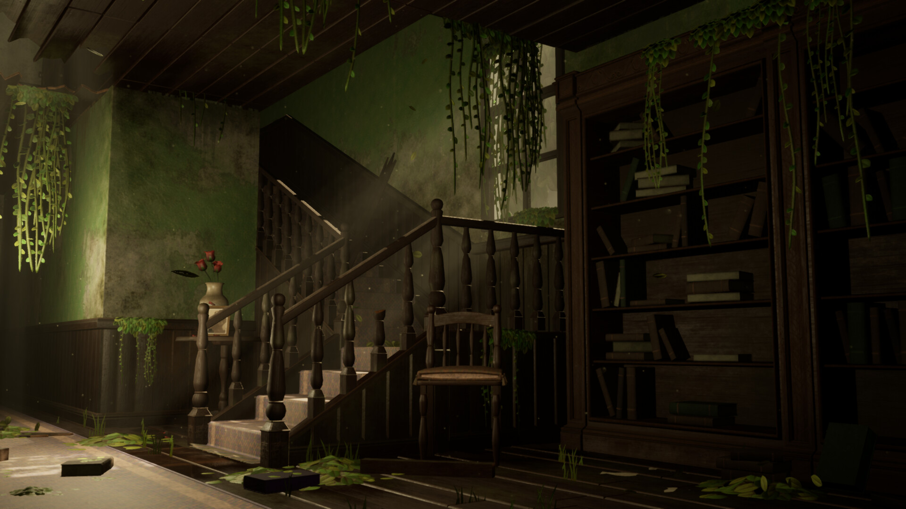
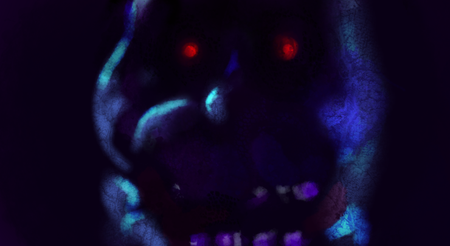

Você entrou em uma mansão abandonada e assim que você entra você encontra dois caminhos, uma grande escada e um longo corredor. Por onde você vai?
Você sobe as escadas e encontra duas portas fechadas, uma à direita e outra à esquerda. Qual você abre?
Você passa pelo corredor e vê sangue espalhado por várias partes e uma porta no final do corredor. Seguir em frente e abrir a porta ou sair da Mansão
Você abre a porta à sua direita e não vê nada. Ir embora ou abrir a outra porta
Assim que você abre a porta uma grande criatura pula em cima de você te deixando inconsciente instantaneamente
Você sai da mansão e vive por mais um dia